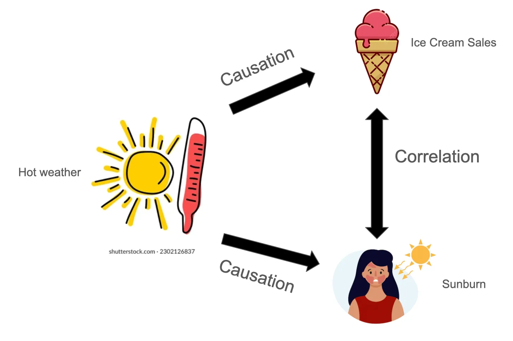
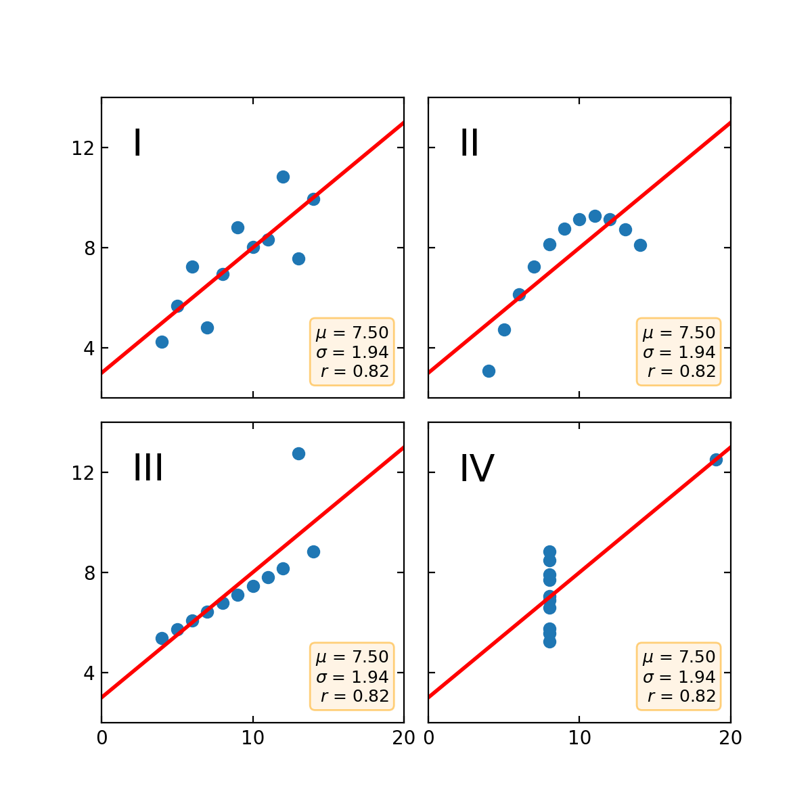
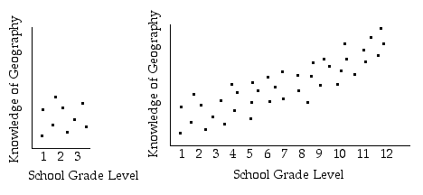
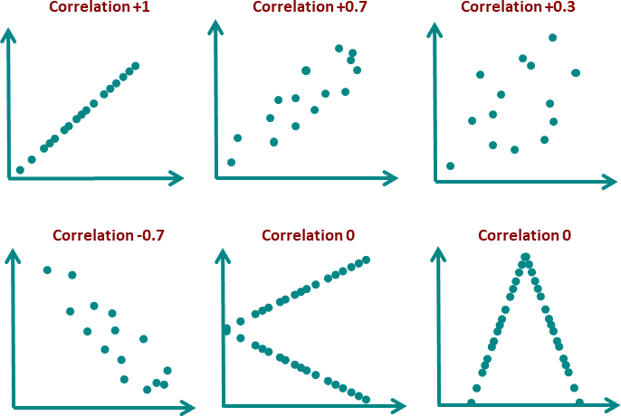

1 Correlation vs. Regression
Both tools explore the relationship between variables, but they answer different questions.
2 Pearson's \(r\)
For linear relationships between two continuous variables, we use the Pearson Product-Moment Correlation Coefficient (\(r\)). It summarizes how closely two variables move together as a number between \(-1\) and \(+1\).
The Formula
Think of \(r\) as a standardized ratio: how much the variables vary together divided by the amount of variation each variable has on its own.
- Numerator: the cross-deviation sum, which is proportional to the covariance of \(X\) and \(Y\). Do high values of \(X\) tend to appear with high values of \(Y\)?
- Denominator: the product of their individual variation. This normalizes the score to the range \([-1, +1]\).
Interpreting the Value
| Value | Meaning | Example |
|---|---|---|
| r = +1 | Perfect positive linear relationship | Every increase in X corresponds to an exactly linear increase in Y. |
| r = -1 | Perfect negative linear relationship | As study hours increase, error rate decreases perfectly. |
| r = 0 | No linear relationship | A curved relationship may still be present even when \(r\) is near zero. |
Testing Whether a Correlation Is Statistically Significant
A sample correlation \(r\) estimates the population correlation \(\rho\). To test whether the observed relationship is stronger than expected from random sampling variation alone, the usual null hypothesis is:
When the assumptions for Pearson correlation are reasonable, the test statistic is:
3 Assumptions & Pitfalls
Statistical Requirements
Four Common Pitfalls




4 Regression Fundamentals
Regression fits an equation to data so we can predict an outcome and describe how that prediction changes as predictors change.
The Linear Equation
Example
Suppose we record weekly endurance training hours and estimated VO2 max for a group of students. A simple model might be:
The slope says that each additional weekly training hour is associated with an expected 2.1 ml/kg/min higher VO2 max. The model is predictive and associational; it does not prove that adding one hour of training would cause exactly that gain for every person.
Prediction vs. Explanation
Regression can be used for both prediction and explanation, but those goals are not identical. A model can predict well without revealing a causal mechanism, and a statistically significant predictor may still add little practical predictive value.
Ordinary Least Squares (OLS)
The best-fitting line is found by minimizing the Sum of Squared Errors (SSE), also called the Residual Sum of Squares (RSS). We square residuals so positive and negative errors do not cancel out:
Calculating the Coefficients
The OLS solution has closed-form formulas. The slope is derived first, then the intercept ensures the line passes through \((\bar{X}, \bar{Y})\):
Uncertainty in the Slope
The fitted slope \(\hat{\beta}_1\) is an estimate, not the exact population value. We usually report a standard error, confidence interval, and p-value for the slope:
A 95% confidence interval gives a range of plausible values for the true population slope. If the interval for \(\beta_1\) does not include 0, that corresponds to a statistically significant slope test at approximately \(\alpha = 0.05\) for a two-sided test.
Connecting Correlation and Regression: \(R^2\)
In simple linear regression, squaring Pearson's correlation gives the Coefficient of Determination:
5 Simple Linear Regression (SLR)
SLR models the relationship between one independent variable \(X\) and one dependent variable \(Y\) by fitting a straight line to observed data.
Core Assumptions: LINE
For valid statistical inference, four key assumptions should be checked:
Reading Diagnostic Plots
| Pattern | What It Suggests | Possible Response |
|---|---|---|
| Residuals curve upward or downward | The relationship may not be linear. | Consider a transformed predictor, polynomial term, or a nonlinear model. |
| Residual spread forms a fan shape | Unequal variance, also called heteroscedasticity. | Consider a transformation, weighted regression, or robust standard errors. |
| Q-Q plot has strong tail departures | Residuals may be non-normal, especially in the tails. | Check outliers and consider whether inference based on normal residuals is reliable. |
| One point sits far from the rest | The point may be an outlier, high-leverage point, or influential observation. | Investigate the data source and compare results with and without the point. |
Outliers, Leverage, and Influence
Not all unusual points affect a regression line in the same way. An outlier has an unusual \(Y\) value, a high-leverage point has an unusual \(X\) value, and an influential point noticeably changes the fitted model if it is removed.
6 Multiple Linear Regression (MLR)
MLR expands SLR by using two or more independent variables to predict one dependent variable. This helps account for multiple factors at once.
The Model Equation
- \(p\): the number of predictor terms in the model, not including the intercept.
- \(\beta_1, \beta_2, \dots, \beta_p\): partial regression coefficients. Each coefficient estimates the expected change in \(Y\) per 1-unit change in that predictor, holding all other predictors constant.
Geometry
SLR fits a best-fit line (1-D). MLR fits a best-fit plane for two predictors or a hyperplane (n-D) for three or more predictors. The OLS principle still applies: choose the coefficients that minimize SSE.
Additional Assumption: No Severe Multicollinearity
7 Evaluating Model Fit
To judge model fit, compare how much variation the model explains with how much unexplained error remains.
A. Sum of Squared Errors (SSE)
SSE, also called Residual Sum of Squares (RSS), measures total unexplained variation. It sums squared distances between observed and predicted values:
A lower SSE means predictions are closer to the observed data. OLS works by minimizing this quantity.
B. Coefficient of Determination (\(R^2\))
To create a scale-free metric, compare SSE with the Total Sum of Squares (SST), the total variation in \(Y\) around its mean:
The variance partition is:
SST (Total) = SSR (explained by the model) + SSE (residual error). \(R^2 = SSR / SST\)
For an ordinary least-squares model with an intercept evaluated on the same data used to fit it, \(R^2\) ranges from \(0\) to \(1\). An \(R^2\) of \(0.85\) means the model explains 85% of the variance in \(Y\) relative to predicting the mean alone.
C. Adjusted \(R^2\): The Penalty Metric
Adjusted \(R^2\) penalizes extra predictors based on sample size \(n\) and number of predictors \(p\):
- Adjusted \(R^2\) increases only if a new predictor improves the model more than expected by chance.
- Adjusted \(R^2\) decreases if a weak or useless predictor is added.
- When comparing MLR models with different numbers of predictors, use Adjusted \(R^2\).
Quick Reference
| Metric | Range | Behavior When Adding Variables | Best Used For |
|---|---|---|---|
| SSE / RSS | \(\ge 0\) | Always decreases or stays the same for nested OLS models | OLS optimization; comparing models on the same outcome scale |
| \(R^2\) | Usually \([0, 1]\) for in-sample OLS with an intercept | Always increases or stays the same for nested OLS models | Describing explained variance, especially in simple regression |
| Adjusted \(R^2\) | \(\le 1\) | Can increase or decrease | Comparing multiple regression models with different predictor counts |
8 Beyond MSE: Robust Regression
Robust loss functions Click to expand.
OLS regression is mathematically elegant, but it can be fragile when data contain outliers. In clinical, biomechanical, and physiological research, extreme observations deserve investigation rather than automatic deletion. Equipment malfunctions, subject non-compliance, movement artifacts, and biological extremes can all produce data points that strongly influence an OLS fit.
Why L2 Breaks Under Outliers
OLS minimizes the sum of squared residuals. Squaring is the source of the problem: a residual of 10 contributes 100 to the loss, ten times more than ten residuals of 1 would. A single outlier with a large residual can dominate the optimization, pulling the regression line toward itself and away from the bulk of the data.
- VO2max testing: A subject who terminated early (pain/nausea) gives a spuriously low value, biasing the group regression.
- Force plate data: Signal dropout or vibration artifacts produce extreme force spikes that dwarf the true biomechanical signal.
- Wearable sensors: Poor electrode contact generates physiologically impossible heart-rate or EMG readings.
- Clinical cohorts: Transcription errors, calibration drift, or subject non-compliance during a measurement window.
The Loss Function Landscape
A loss function \(\rho(e)\) determines how harshly each residual \(e = Y_i - \hat{Y}_i\) is penalized. The choice of loss defines the regression estimator.
M-estimators: IRLS
Robust regression is often solved with Iteratively Reweighted Least Squares (IRLS), which converts the robust problem into a sequence of weighted OLS problems:
Weighted Fit Summary
Standard \(R^2\) is built on squared deviations and the arithmetic mean, so it can be sensitive to outliers. A single extreme point can inflate SST and reduce \(R^2\), even when the model fits the bulk of the data well.
One useful descriptive summary for a robust fit is a weighted pseudo-\(R^2\) using the final IRLS weights \(w_i\):
Observations with low \(w_i\) contribute little to either the numerator or denominator, so this weighted summary reflects fit mainly for the observations that the robust procedure treated as more reliable. It is a descriptive pseudo-\(R^2\), not a universally standardized replacement for ordinary \(R^2\).
9 Interactive Demos
Demo A: Residuals & Least Squares
Use the sliders to move a regression line. The vertical orange segments are residuals: each student's observed VO2 max minus the value predicted from weekly training hours.
SSE:
\(R^2\):
Demo B: Noise, Outliers, and Robust Regression
These samples are generated from an underlying line, then corrupted by noise. Compare the ordinary L2/MSE fit with L1 and Huber fits as the noise becomes heavy-tailed or contaminated by extreme outliers.
L2 / MSE:
L1 / MAE:
Huber: